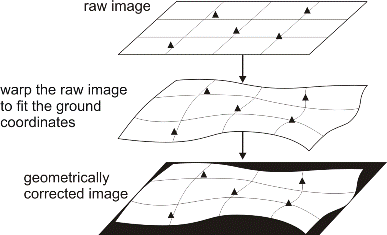
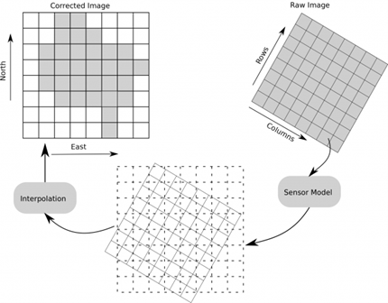
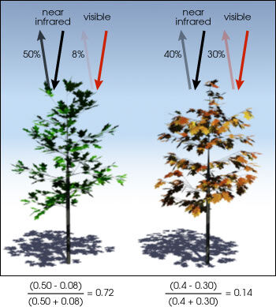
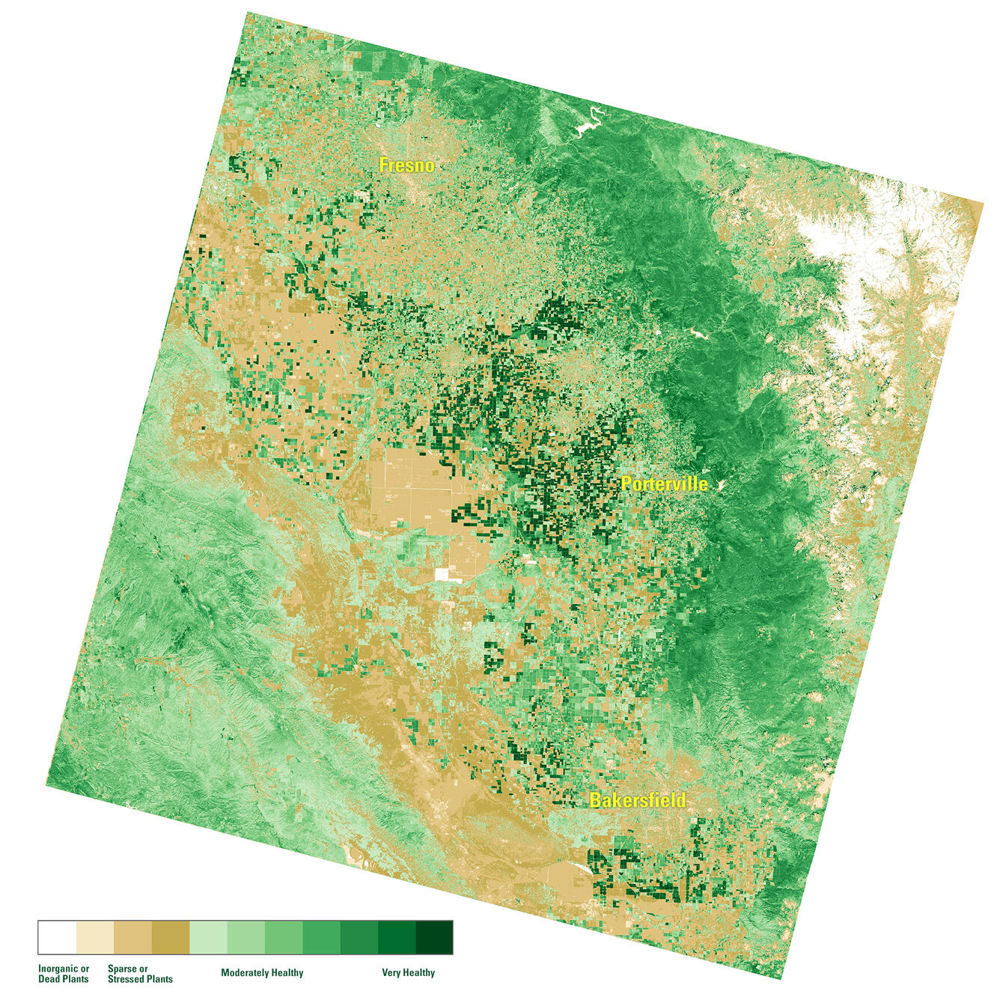
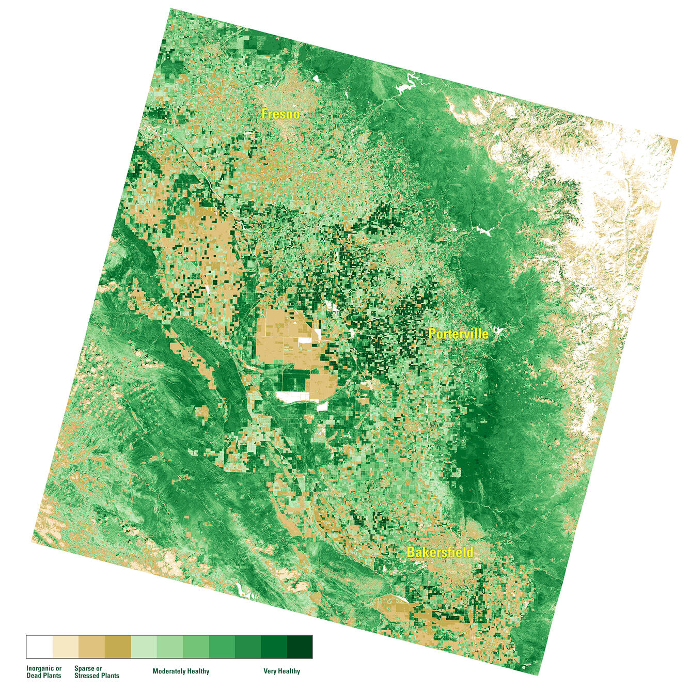
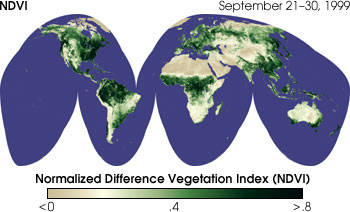
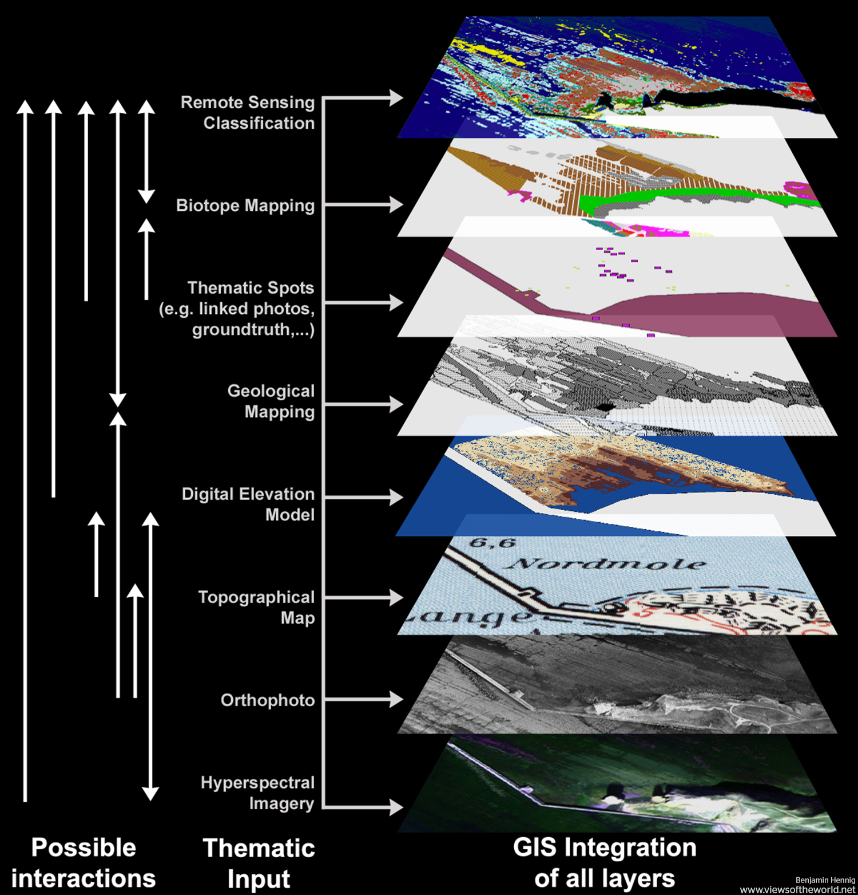

3 Week 3 - Corrections and Image Enhancements
3.1 Summary
This remote sensing lesson covers methods of acquiring and processing remote sensing data and how to apply this data to study cities and the environment. It is mainly divided into two parts: (1) corrections (2) data joining and enhancement.
3.1.1 Corrections
Various errors that may exist in remote sensing images (e.g., due to factors such as sensors, atmosphere, terrain, etc.) and how to correct them through different techniques.
3.1.2 Geometric Correction
How can image distortions caused by factors such as shooting angle, terrain, wind speed (if data is obtained from an airplane), and the Earth’s rotation be addressed? The purpose of geometric correction is to match images with ground control points or other known reference data to ensure spatial accuracy of the images.
 
Geometric correction process. Source: Catalyst Earth
3.1.3 Atmospheric Correction
Focuses on eliminating the effects of the atmosphere on satellite or aerial image data to more accurately reflect the actual reflectivity or brightness value of the surface.
As solar radiation passes through the atmosphere to reach the Earth’s surface, and then reflects back to the sensor, it is scattered and absorbed by gases, water droplets, and particulate matter in the atmosphere. This alters the radiation signal that reaches the sensor.
Relative correction, such as DOS and Pseudo-Invariant Features, uses internal image references for correction and is suitable when atmospheric parameters are lacking.
Absolute correction, applies atmospheric models like MODTRAN for direct correction.

3.1.4 Orthorectification/Topographic Correction
Correct image distortions caused by terrain undulations. Specifically, we can use a Digital Elevation Model (DEM) to convert remote sensing images from perspective to orthographic projection corrects distortions from terrain variations, such as mountains and buildings. This alignment results in more accurate positioning, clearer textures, and sharper boundaries in images (Li et al., 2015).
3.1.5 Radiometric Correction
Involves converting digital image data captured by sensors into true ground reflectance values. This process corrects for sensor system errors and atmospheric condition changes and solar irradiance variations. For example, slopes facing the sun and those in shadow may reflect sunlight in completely different ways. This difference can cause these areas to appear with varying brightness or colors in images, which may then be mistakenly classified into different categories (Jenerowicz et al., 2023).
3.1.6 Data Joining and Image Enhancements
This part gave me an understanding of how image data from different points in time or from different sensors can be effectively joined, and how image quality and visualisation of information can be improved through image enhancement techniques.
Specifically, image enhancement methods include contrast enhancement, spatial enhancement (such as filtering and edge enhancement), Principal Component Analysis (PCA) for dimension reduction, texture analysis for spatial variation, and image fusion techniques to combine data from multiple sources or sensors and so on.

The above image demonstrates a technique for image fusion. On the left, there is a sequence of dense, coarse images with low resolution but high acquisition frequency. In the middle, there are sparse, fine images with high resolution but lower frequency of acquisition. Through spatiotemporal data fusion, a high-resolution and information-rich fine image is synthesized (on the right), effectively combining the advantages of both image types.

This image shows remote sensing imagery enhanced by false-color compositing, a method to highlight specific land features by assigning different spectral bands to RGB colors. It illustrates three different band combinations emphasizing vegetation (6,5,2), buildings (7,6,4), and a combination for vegetation (5,4,3) and distinguishing land/water (5,6,4). This technique not only improves visual perception but also aids in analyzing and identifying various land cover types.
3.2 Applications
In exploring the practical areas of this section, two major enhancement technologies that stood out to me were NDVI and PCA. In terms of NDVI, I had first heard about it and mentioned it in my learning diary in the first week, and as for PCA, I had been exposed to it in my quantitative methods course in the last term. That’s why I’m most curious about both.
3.2.1 NDVI (Normalized Difference Vegetation Index)
Ratio must be mentioned when referring to NDVI.
Ratio calculation involves dividing the pixel values of one band by the corresponding pixel values of another band, which helps reduce the impacts of factors such as changes in illumination, terrain shadows, etc., thus increasing the accuracy of the analysis. NDVI is a classic example of ratio.
NDVI assess the condition of vegetation growth by measuring the difference between near-infrared (which vegetation strongly reflects) and red light (which vegetation absorbs).
\[ NDVI = \frac{(NIR-Red)}{(NIR+Red)} \] NIR represents the reflectance of the Near-Infrared band, and Red represents the reflectance of the Red band. NDVI values range from -1 to 1. High values of NDVI indicate higher levels of live green vegetation.

How do we use NDVI?
We see several sectors using NDVI. For example, in agriculture, farmers use NDVI for precision farming and to measure biomass. Whereas, in forestry, foresters use NDVI to quantify forest supply and leaf area index.
The below graphics shows the Landsat Surface Reflectance (SR) NDVI maps of the San Joaquin Valley region of California on March 10, 2022 and March 13, 2023. The left 2022 map shows the impact on local vegetation after several years of drought. An extremely wet spring in 2023 lead to an early green-up in the valley.
 
NDVI Maps of the San Joaquin Valley Region, March 2022 and March 2023. Source: USGS
Furthermore, NASA states that NDVI is a good indicator of drought. When water limits vegetation growth, it has a lower relative NDVI and density of vegetation.
The below satellite maps of vegetation show the density of plant growth over the entire globe. Very low values of NDVI (0.1 and below) correspond to barren areas of rock, sand, or snow. Moderate values represent shrub and grassland (0.2 to 0.3), while high values indicate temperate and tropical rainforests (0.6 to 0.8).

3.2.2 PCA (Principal Component Analysis)
I was introduced to the concept of PCA for the first time In the quantitative methods course last term. It is used to reduce the dimensionality of datasets with correlated independent variables. The result allowed me to retain most of the information in the dataset with as few principal components as possible, effectively reducing the size of the dataset while also enhancing interpretability.
How to use PCA in remote sensing?
Running a principal component analysis on three bands was useful because we found the third component did not add much information.
What about a 10-band multispectral image? Or even 100 or 200 bands (hyperspectral imagery)? This is where PCA is really useful – multispectral and hyperspectral analysis.
For example, if most of the variance (eigenvalue) is found in principal components one, two, and three, it’s only necessary to use these three principal components. For land cover classification, it is much easier to use three bands compared to all 100 bands. In summary, PCA identifies duplicate data over multiple channels, reduces redundancy, and speeds up the processing time. This is key for PCA image processing.

3.3 Reflection
Reflecting on the week’s lessons in remote sensing, I’ve been struck by the complexity of interpreting Earth via satellite imagery. The focus on corrections and enhancements, like geometric and atmospheric corrections, and the use of NDVI and PCA—has deepened my understanding of the field’s precision and the technological tools at our disposal. This exploration underscored the vital balance between leveraging technology and applying human insight to fully realize the full potential of remote sensing data.
It may be a bit much to write about these last few weeks because there is a great deal of unfamiliar terms and concepts to understand for me, who is completely new to the remote sensing journey, and I will try to keep it as concise as possible for the rest of the week!😄 However, I firmly believe in the importance of establishing a strong foundation for my future in-depth practice. I also broadened my horizons by searching for information and communicating with others after class, which is very interesting and rewarding. I really enjoy exploring the unknown and enriching myself with new skills.🥰